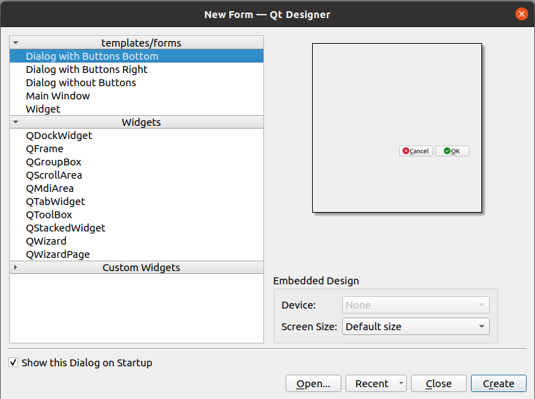

Créer une extension QGIS avec une interface graphique
Pour faire ce chapitre, il faut d'abord avoir une extension de base, à l'aide du chapitre précédent.
QtDesigner
Créons un fichier QtDesigner comme-ceci :

et y ajouter des "widgets" :

Ouvrir la page des slots/signaux depuis la barre d'outils et supprimer ceux qui existent.
La classe qui accompagne
Créons un fichier dialog.py avec le contenu suivant :
from qgis.core import Qgis
from qgis.utils import iface
from qgis.PyQt.QtWidgets import QDialog, QDialogButtonBox
from qgis.PyQt import uic
from pathlib import Path
folder = Path(__file__).resolve().parent
ui_file = folder.joinpath('dialog.ui')
ui_class, _ = uic.loadUiType(ui_file)
class MonDialog(ui_class, QDialog):
def __init__(self):
super().__init__()
self.setupUi(self) # Fichier de QtDesigner
Modifions la méthode la méthode run du fichier __init__.py en
def run(self):
from .dialog import MonDialog
dialog = MonDialog()
dialog.exec_()
Relançons l'extension à l'aide du "plugin reloader" et cliquons sur le bouton.
Les signaux et les slots
Connectons le signal clicked du bouton "Annuler" dans le constructeur __init__ :
self.buttonBox.button(QDialogButtonBox.Cancel).clicked.connect(self.close)
On dit que clicked est un signal, auquel on connecte le slot close.
Connectons-le signal clicked du bouton "Accepter" à notre propre slot (qui est une fonction) :
self.buttonBox.button(QDialogButtonBox.Ok).clicked.connect(self.click_ok)
et ajoutons notre propre fonction click_ok pour quitter la fenêtre et en affichant la saisie de
l'utilisateur dans la QgsMessageBar de QGIS.
Le widget de saisie est un QLineEdit : https://doc.qt.io/qt-5/qlineedit.html
def click_ok(self):
message = self.lineEdit.text()
iface.messageBar().pushMessage('Notre plugin', message, Qgis.Success)
Faire le test dans QGIS avec une saisie de l'utilisateur et fermer la fenêtre.
Continuons en rendant en lecture seule le gros bloc de texte et affichons à l'intérieur la description de la la couche qui est sélectionnée dans le menu déroulant.
Documentation :
- QPlainTextEdit : https://doc.qt.io/qt-5/qplaintextedit.html
- QgsMapLayerComboBox : https://qgis.org/api/classQgsMapLayerComboBox.html
Dans le __init__ :
self.plainTextEdit.setReadOnly(True)
self.mMapLayerComboBox.layerChanged.connect(self.layer_changed)
Et la nouvelle fonction qui va se charger de mettre à jour le texte :
def layer_changed(self):
self.plainTextEdit.clear()
layer = self.mMapLayerComboBox.currentLayer()
if layer:
self.plainTextEdit.appendPlainText(f"{layer.name()} : {layer.crs().authid()}")
else:
self.plainTextEdit.appendPlainText("Pas de couche")
On peut donc désormais cumuler l'ensemble des chapitres précédents pour lancer des algorithmes, manipuler les données etc.
Solution
from qgis.core import Qgis
from qgis.utils import iface
from qgis.PyQt.QtWidgets import QDialog, QDialogButtonBox
from qgis.PyQt import uic
from pathlib import Path
folder = Path(__file__).resolve().parent
ui_file = folder.joinpath('dialog.ui')
ui_class, _ = uic.loadUiType(ui_file)
class MonDialog(ui_class, QDialog):
def __init__(self, parent=None):
_ = parent
super().__init__()
self.setupUi(self) # Fichier de QtDesigner
# Connectons les signaux
self.buttonBox.button(QDialogButtonBox.Ok).clicked.connect(self.click_ok)
self.buttonBox.button(QDialogButtonBox.Cancel).clicked.connect(self.close)
self.plainTextEdit.setReadOnly(True)
self.mMapLayerComboBox.layerChanged.connect(self.layer_changed)
def click_ok(self):
self.close()
message = self.lineEdit.text()
iface.messageBar().pushMessage('Notre plugin', message, Qgis.Success)
def layer_changed(self):
self.plainTextEdit.clear()
layer = self.mMapLayerComboBox.currentLayer()
if layer:
self.plainTextEdit.appendPlainText(f"{layer.name()} : {layer.crs().authid()}")
else:
self.plainTextEdit.appendPlainText("Pas de couche")